GT-M
Street to sport
Opposed-piston calipers and lightweight two-piece discs, cross-drilled or slotted, for precise modulation and strong resistance to fade.
Red, black, white or bespoke
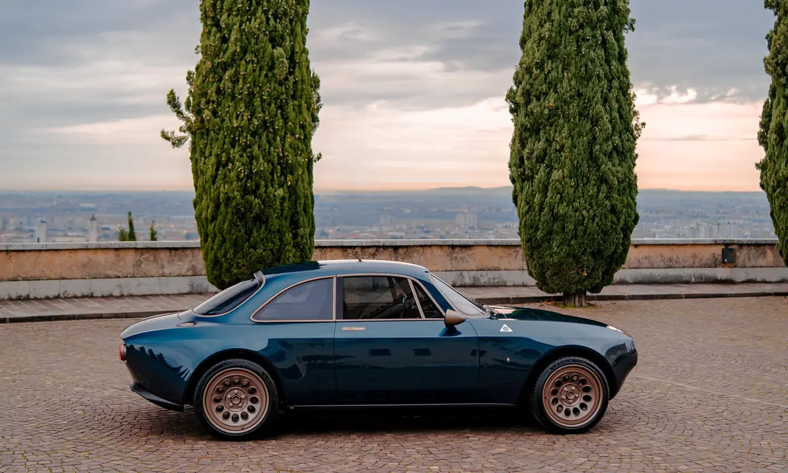
Silent quick. The modern Gran Turismo.
2.9s
0–100 km/h
590hp
Maximum power
900Nm
Maximum torque
210km/h
Top speed, limited
500km
Range, up to
The GT Electric is the Totem GT in its most modern form. Torque arrives in an instant and without interruption, and the calm lets every detail of the road speak.
It keeps the silhouette that made an icon and redesigns everything beneath it: a carbon-fibre monocoque, aluminium subframes, double wishbones machined from solid and an electric powertrain developed with Italtecnica Engineering. It was the first Totem, and it remains the most serene.
Silent when you wish, vivid when you ask.
A rear-mounted electric drive unit with integrated inverter and limited-slip differential delivers 900 Nm to the rear wheels alone. Several drive modes, each with its own power-delivery map, have been conceived for electric driving; ABS can be set across multiple levels, and so can the dampers on request.
81kWh
Battery capacity
12
UN38.3 modules
90kW
DC fast charging, CCS
6.6kW
AC charging, Type 2
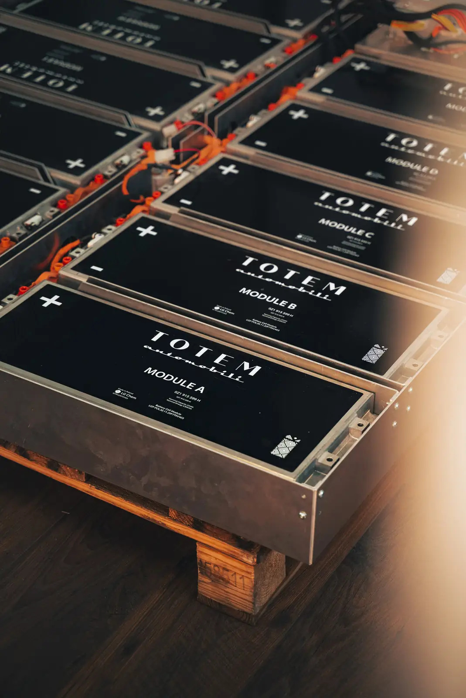
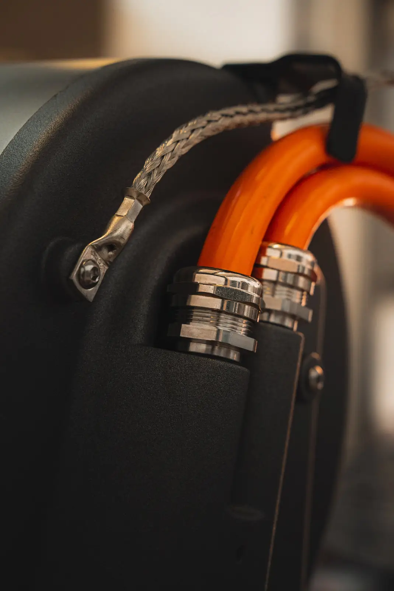
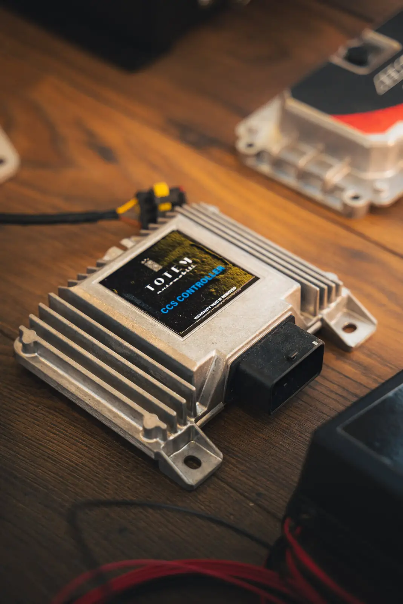
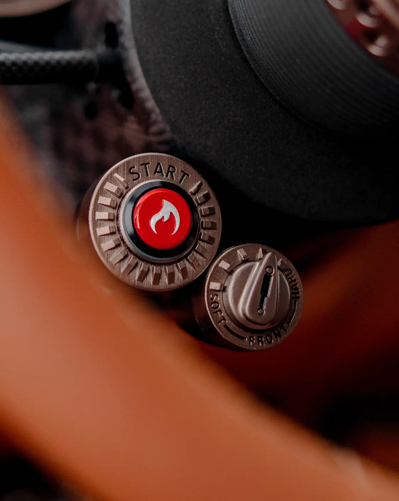
At home, the single-phase on-board charger accepts up to 6.6 kW; on the road, CCS fast charging reaches 90 kW. The 81 kWh pack weighs 352 kg and gives a range of 400 to 500 kilometres at a grand-touring pace.
At the heart of every Totem GT lies a carbon-fibre monocoque developed by Totem and its specialist partners, from raw materials born of decades of aerospace research. Composite sheets are laid into CNC-machined assembly jigs for outstanding structural accuracy.
Validated through finite-element analysis to US and EU passenger-safety requirements, the shell is joined to high-resistance 6082 aluminium subframes. From high-precision milled moulds, the wide body is rebuilt entirely in carbon fibre, its doors reinforced with aramid fibre.
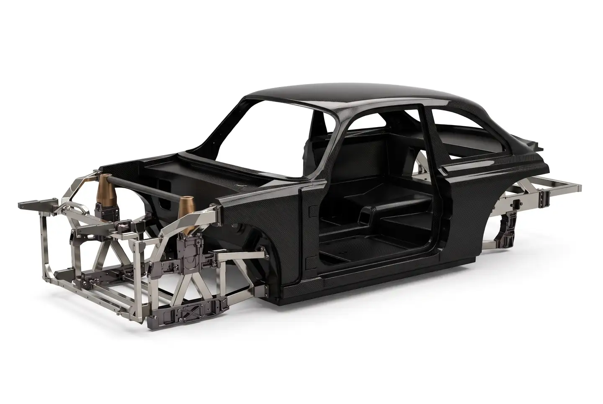
75kg
Carbon-fibre monocoque shell
US–EU
Safety requirements, validated by FEA
100%
Carbon-fibre body panels
Beneath the carbon-fibre bodywork lie aluminium subframes, built by welding CNC-machined blocks to square-section tubes. They carry a double-wishbone suspension of Totem’s own design, machined from solid aluminium, at both the front and the rear.
The dampers are manually adjustable as standard. For those who ask for more, a higher-performance suspension is available, electronically adjustable front and rear through two dials in the cockpit.
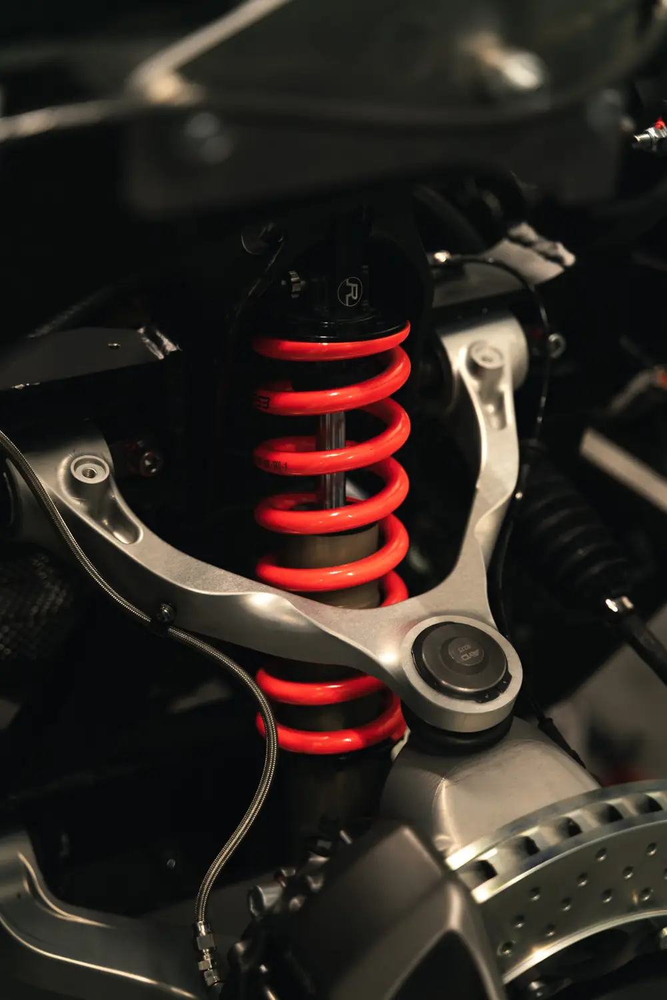
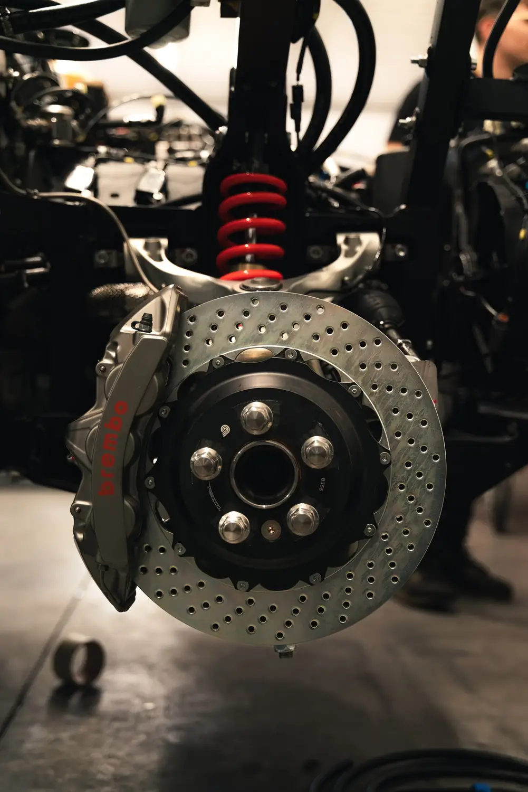
Every GT Electric stops on Brembo aluminium monobloc fixed calipers, six pistons at the front and four at the rear, with cross-drilled, internally vented discs of 355 × 32 mm and 345 × 28 mm. Three Brembo systems then refine that character to the owner’s life.
GT-M
Street to sport
Opposed-piston calipers and lightweight two-piece discs, cross-drilled or slotted, for precise modulation and strong resistance to fade.
Red, black, white or bespoke
GT-S
Street to sport
Lightweight slotted discs for consistent stopping in every condition, above all on wet and slippery surfaces.
Dark grey, red logo, or bespoke
GT-R
Track-oriented
Billet monobloc calipers from Formula 1 technology, nickel-plated against corrosion and made to withstand higher temperatures.
Nickel, red logo, or bespoke
Developed with
Round lamps were the face of the great Italian coupés of the 1960s, and they remain the face of the Totem GT. Behind the classic outline, every light is LED: recognisable at a glance, by day and by night.
The outer rings of the headlights and tail lights are machined from solid and finished by galvanic treatment in the metal the client chooses.
In counterpoint to the lacquer, every exterior brightwork element is finished in a galvanic tone of the client’s choosing: gold, bronze, platinum, nickel, aluminium, gunmetal or noir, glossy or satin. The same palette may be carried into the cockpit, so that metal speaks one language throughout the car.
Inside, the GT Electric keeps the analogue soul of every Totem: round instruments, machined switchgear and leathers chosen hide by hide, cut, stitched and fitted by our artisans.
A 3.5-inch screen with a vintage look carries navigation, DAB+, Bluetooth and USB, while an Audio Development hi-fi system is tuned to the cabin.
Every Totem seat is shaped around the person who sits in it. Three characters, endless configurations: leathers, cloths, stitching and shells combine freely.
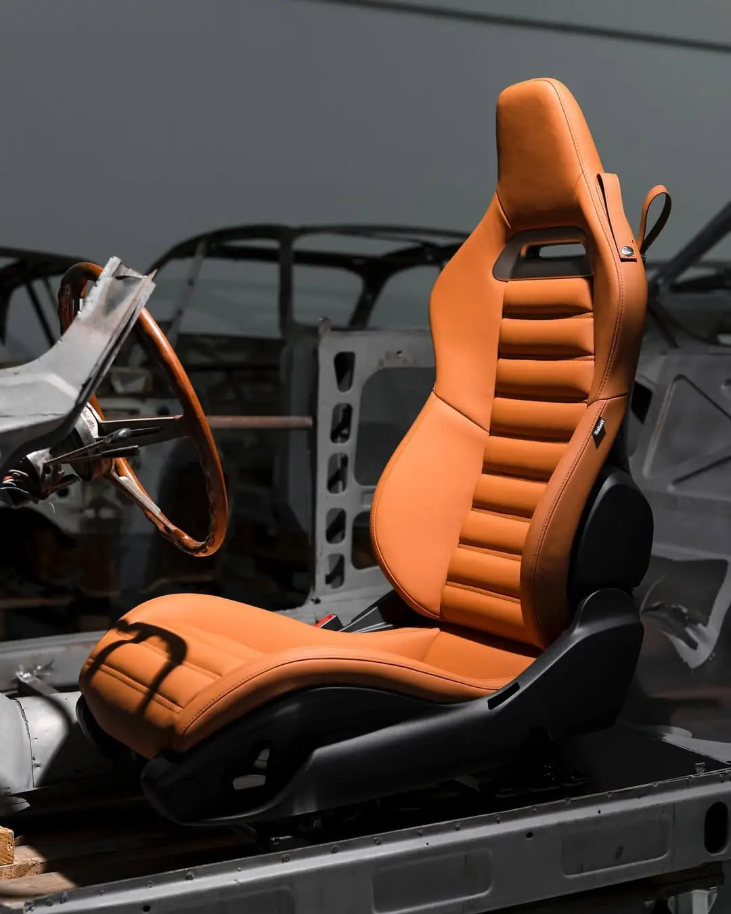
The comfort seat, made by Sabelt for Totem to a Totem design: a sculpted shell with signature horizontal pleats, electrically adjustable in six ways.
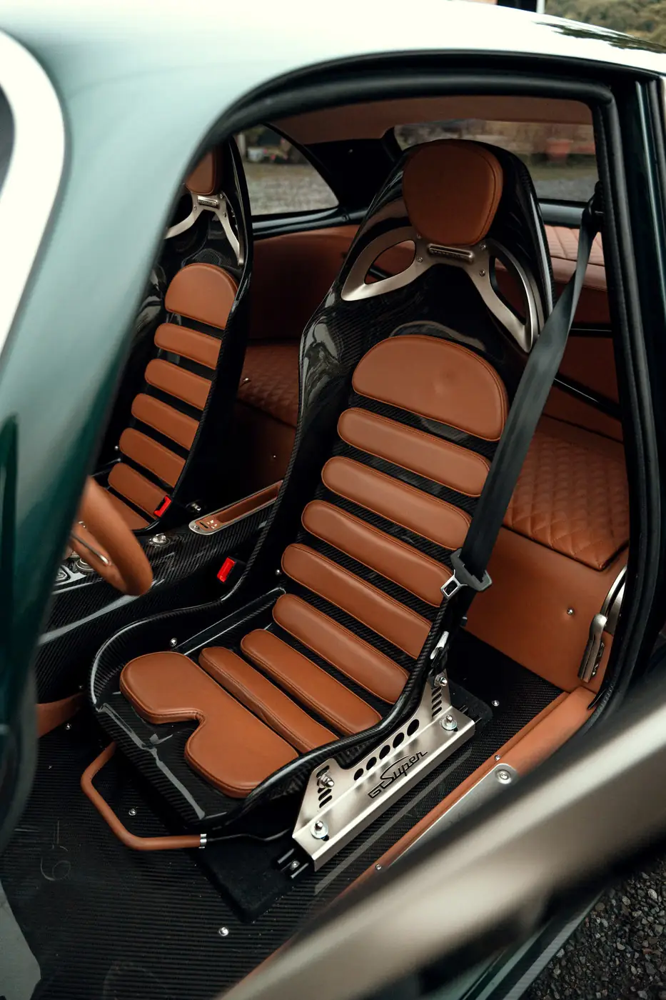
A carbon-fibre bucket pared back to the essential, with harness openings, deep lateral support and the lowest possible weight.
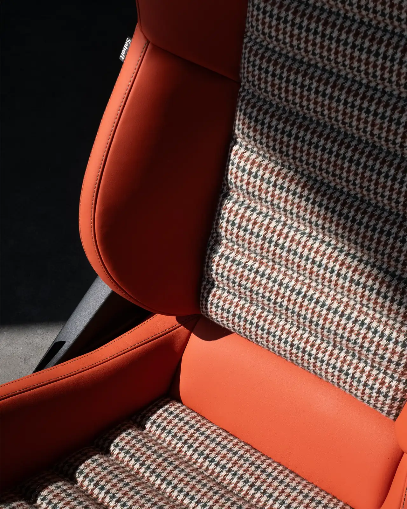
Through the Totem Individual Program: bespoke inner trims, embroidered ribbons, silks and weaves, shaped around a single client.
Paint matched to any sample, three carbon weaves, billet wheels, galvanic finishes, leathers chosen hide by hide. And beyond the catalogue, the Totem Individual Program.
The figures of the GT Electric as built to its standard specification.
Specifications, performance and range figures are indicative, may vary with configuration and market, and do not constitute a contractual offer.
The cars photographed on the roads, villas and coastlines where they belong. Select any image to enlarge it.
30 pages · PDF · 6.5 MB. Every chapter of the car, from the carbon anatomy to the visual archives of its commissions.